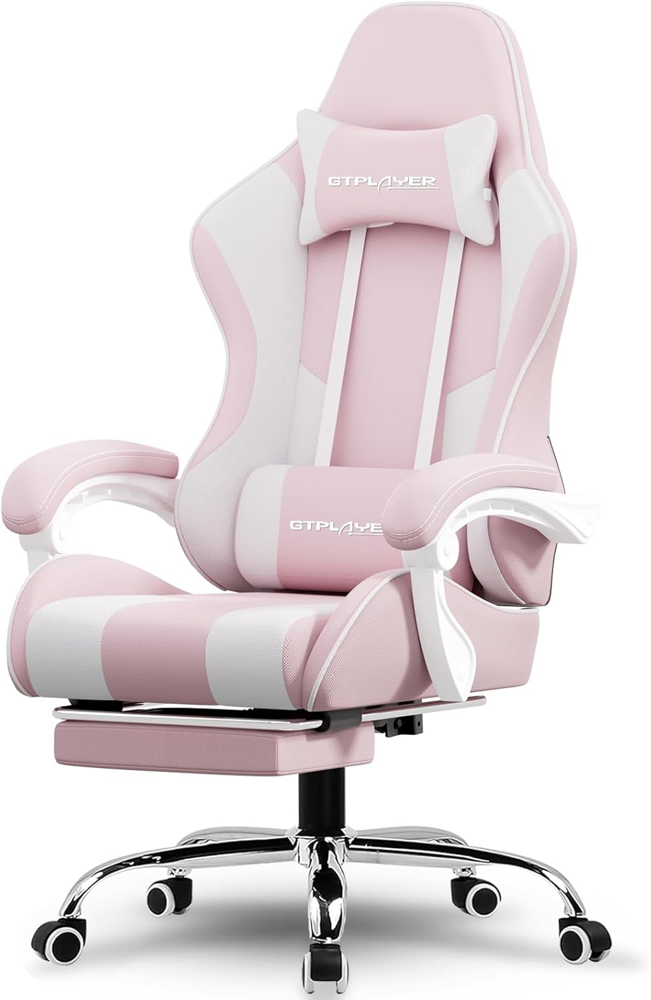
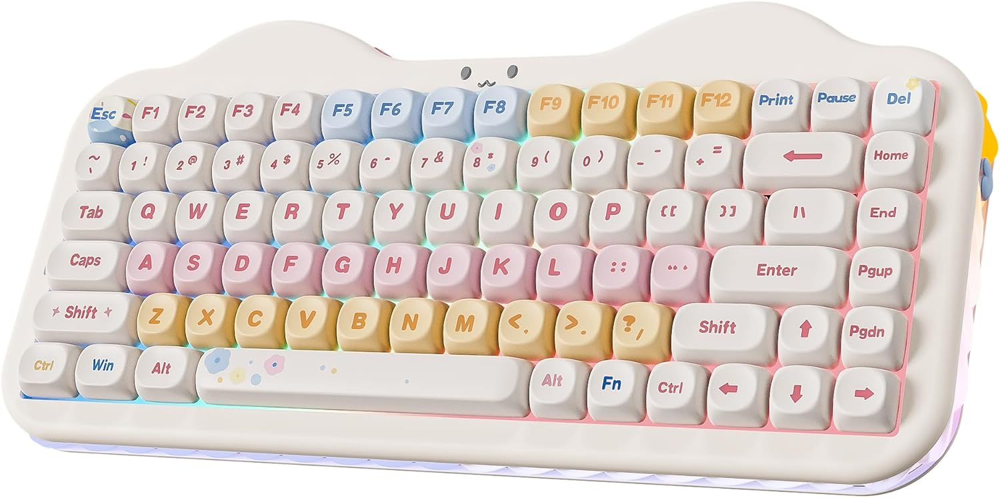
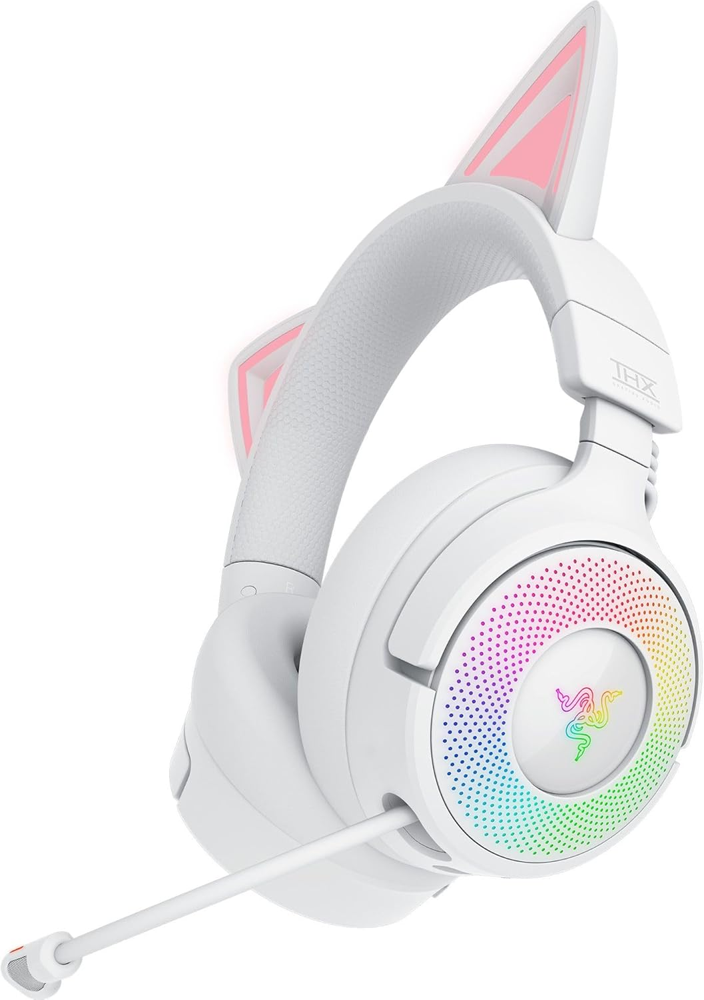
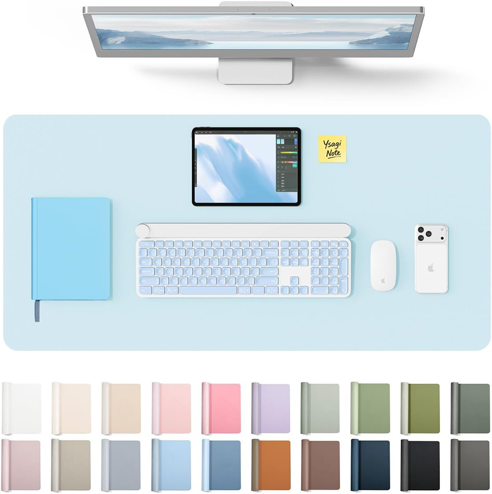
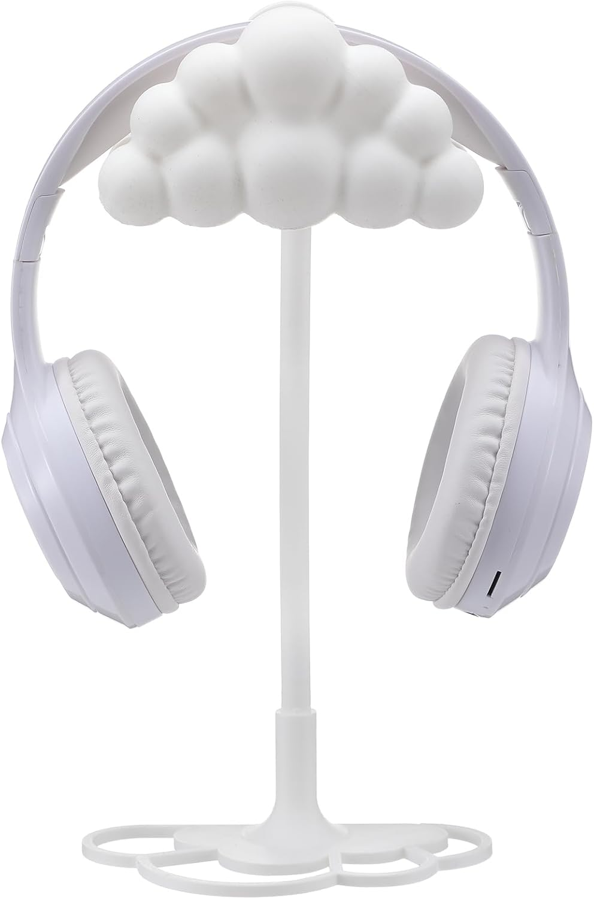
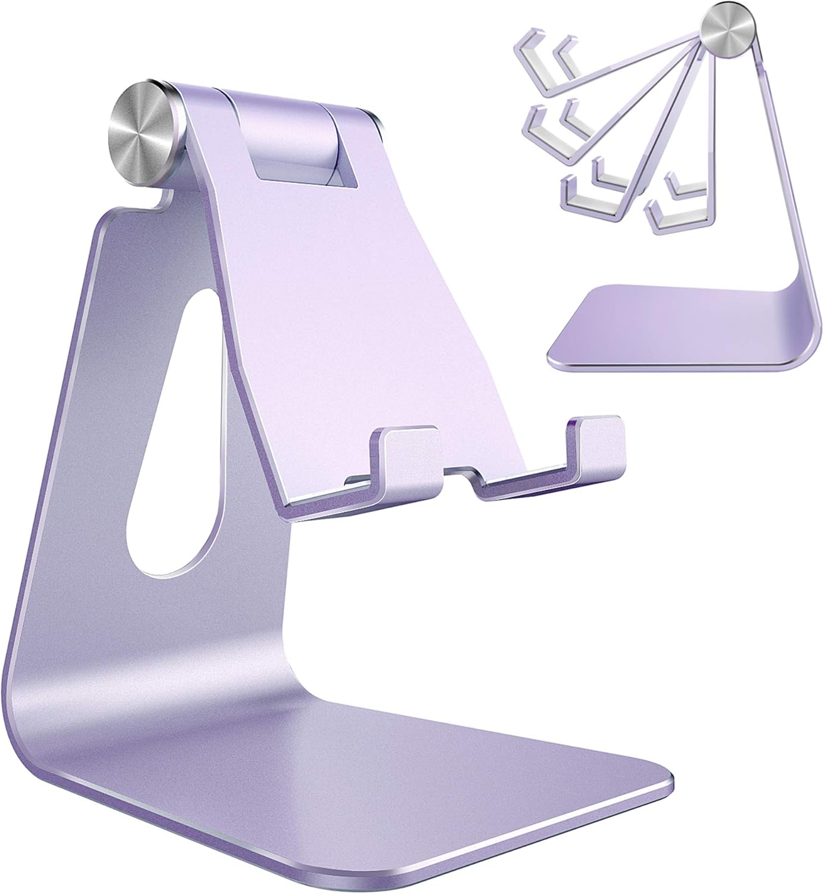
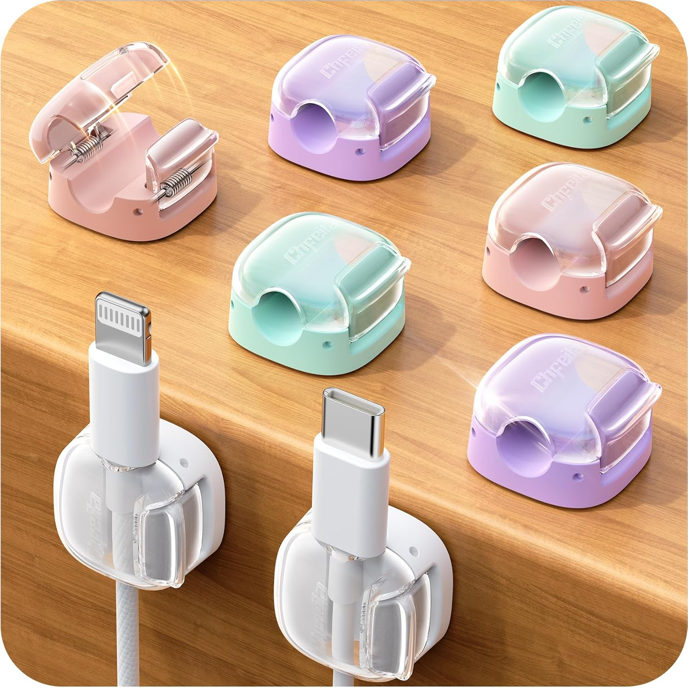

Pastel cozy coding & gaming desk setup
A soft, calm battlestation that works for deep focus sessions and late-night play — every single piece linked so you can shop the whole look.
Updated June 2026 · 9 pieces to shop

If you've spent any time on the cozy gaming side of Pinterest, you know the vibe: soft lighting, cute accessories, a desk that looks like it belongs in a Studio Ghibli film. This pastel battlestation leans into baby blues and lavenders instead of pink, but keeps the same idea — every piece earns its spot, nothing feels like filler, and the whole thing photographs beautifully whether you're coding at 2pm or gaming at midnight.
Everything in this setup
- 01ChairGTPLAYER gaming chair — pink fabric
- 02DisplayCRUA 27" curved white monitor
- 03KeyboardYUNZII C75 wireless mechanical keyboard
- 04HeadsetRazer Kraken Kitty V3 Pro — white
- 05Desk matYSAGi leather desk pad — baby blue
- 06LightingQuntis monitor light bar
- 07AccessoryYookeer cloud headphone stand
- 08AccessoryAdjustable phone stand — purple
- 09AccessoryPastel cable clips (8-pack)

GTPLAYER gaming chair — pink fabric
The centerpiece of the whole setup and the first thing your eyes go to in every photo. The GTPLAYER pink fabric chair hits the sweet spot between looking incredible and actually being comfortable for long sessions — lumbar support, headrest pillow, footrest, all in a soft pink-and-cream colorway that softens against the baby blue palette around it.
Most pink gaming chairs look great in photos and feel terrible after an hour. This one has real padding, a footrest (rare at this price), and fabric instead of the cheap PU leather that cracks within a year.
Check price on Amazon ↗
CRUA 27" curved white monitor
A curved white monitor is the design choice that makes a pastel setup look intentional rather than thrown together. The CRUA 27" has a 1800R curve, full HD 1080p, 100Hz, 120% sRGB, and a three-sided frameless design. The white chassis disappears into the soft color palette instead of fighting with it.
Curved white monitors are hard to find at a reasonable price. This one looks genuinely white — not that off-white beige most monitors ship with — and the blue light filter makes late-night sessions much easier on the eyes.
Check price on Amazon ↗
YUNZII C75 wireless mechanical keyboard
This is the piece that makes people stop scrolling. The YUNZII C75 has a 75% layout, hot-swappable NKRO switches, dye-sub PBT MOA keycaps in a soft pastel "cake" design, a gasket-mounted RGB underglow, and triple connectivity (Bluetooth 5.0, 2.4GHz, USB-C). It types as good as it looks.
Gasket-mount keyboards feel noticeably softer and more cushioned than standard mounts — it's a genuine typing upgrade, not just a pastel skin on a basic board. Hot-swap support means the candy switches can be swapped out later too.
Check price on Amazon ↗
Razer Kraken Kitty V3 Pro — white
Razer's Kraken Kitty V3 Pro is the headset that turns a cute desk into a serious one — Chroma RGB cat ears, 2.4GHz and Bluetooth 5.3 connectivity, 40mm drivers, THX Spatial Audio, and a super wideband mic, all in white. It's the rare cat-ear headset that's actually built by a real audio brand instead of a knockoff.
Most cat-ear headsets are budget hardware with a gimmick bolted on. This is genuine Razer audio engineering wearing cat ears — you get the aesthetic without giving up sound quality or mic clarity.
Check price on Amazon ↗
YSAGi leather desk pad — baby blue (31.5" × 15.8")
A full-width desk mat is the foundation that ties every piece of a setup together. This baby blue PU leather pad covers the keyboard, mouse, and wrist rest in one unified surface — waterproof, easy to wipe down, and the exact shade of blue that the whole palette is built around.
Go full-width or don't bother — a mouse-pad-sized mat makes expensive setups look budget. This one photographs beautifully and protects the desk from scratches and the inevitable coffee incident.
Check price on Amazon ↗
Quntis monitor light bar pro — white
The monitor light bar is the single upgrade that makes a desk feel cozy versus just clean. It sits on top of your monitor, casts warm light down onto the desk without any glare on the screen, and has stepless dimming plus auto-brightness. The white finish matches the monitor and disappears into the rest of the setup.
Bias lighting reduces eye strain significantly during late-night sessions — it's not just for looks. The auto-dimming adjusts to your room so you don't have to think about it. Easiest comfort upgrade on this list.
Check price on Amazon ↗
Yookeer cloud headphone stand
A headset left lying on the desk ruins an otherwise tidy setup. This 3D cloud-shaped stand gives the headset a proper home and adds a soft decorative touch at the same time — it reads as a little sculpture as much as a functional stand.
Function and decor in one object is exactly the kind of upgrade that separates a thrown-together desk from a styled one. It's a small thing that shows up in every overhead photo.
Check price on Amazon ↗
Adjustable phone stand — purple
In a pastel setup a phone stand isn't just convenient — it's a design piece. This aluminum lavender stand adjusts to any angle, fits every phone size, and the purple finish bridges the pink chair and blue desk mat without competing with either.
Aluminum stands don't wobble or scratch your phone. This one folds flat, adjusts perfectly for face ID and video calls, and the color is the detail that ties the whole palette together.
Check price on Amazon ↗
Pastel cable clips — 8-pack
Cable management is the invisible upgrade that separates a good-looking setup from a great-looking one. These spring-lock clips come in a mix of pastel shades and keep every cable routed and out of sight along the edge of the desk.
Most people skip cable management and wonder why their setup doesn't look as clean as the ones they save on Pinterest. Five minutes with these clips transforms the back of your desk completely.
Check price on Amazon ↗